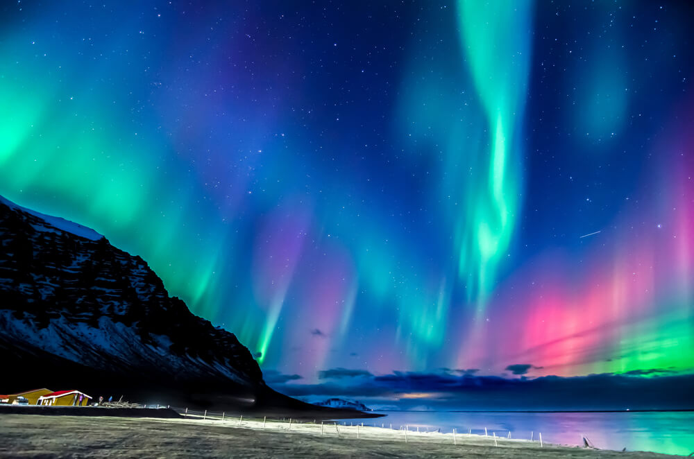

Aurora Boreal
O Sol solta continuamente partículas carregadas (vento solar) e grandes erupções solares. Ao atingir a Terra, o campo magnético do planeta guia essas partículas para os polos. Na termosfera, elas colidem com átomos de oxigênio gerando luz verde e vermelha, e nitrogênio, gerando luz azul e roxa, liberando essa energia luminosa que compõe o fenômeno.
Diariamente nas Regiões Polares
A cada 11 anos, sua visibilidade aumenta